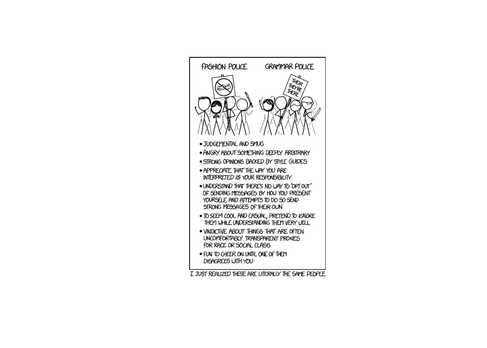
Lesson 8: Continuous Random Variables
Calendar
Day 1
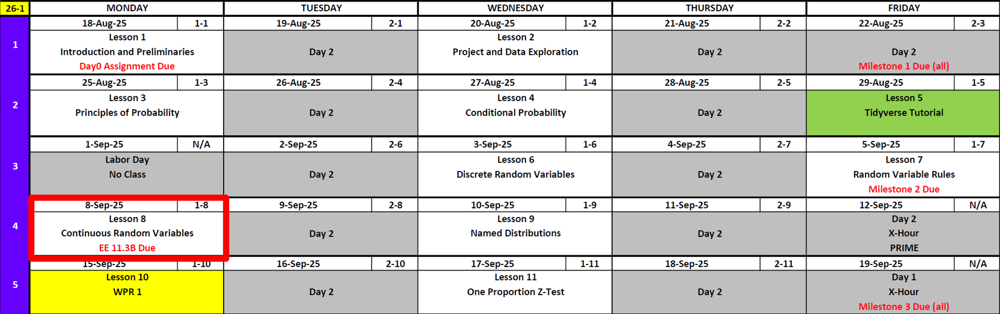
Day 2
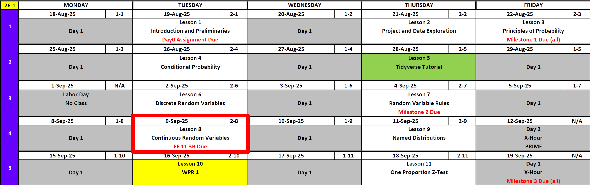
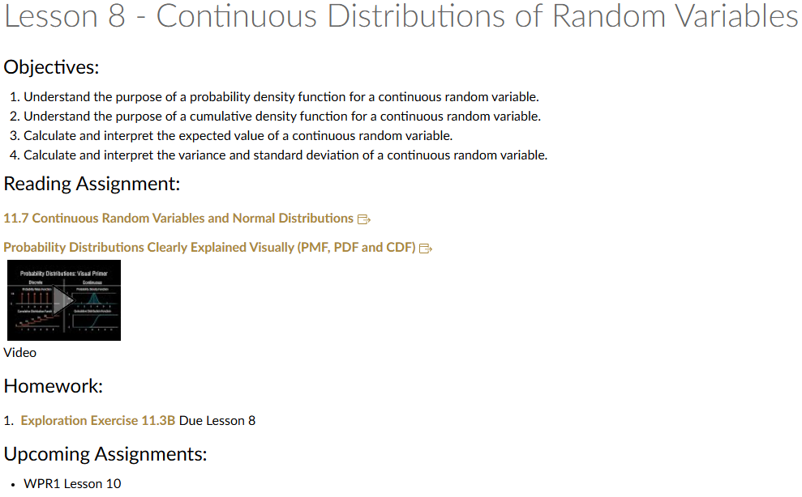
Updates
DMath Frisbee Update
Math 1 vs DPE
Previously 2-0
3-0

Cal
Vintage Army Football
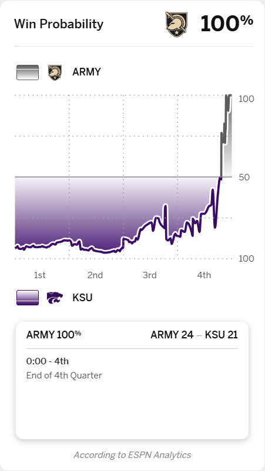
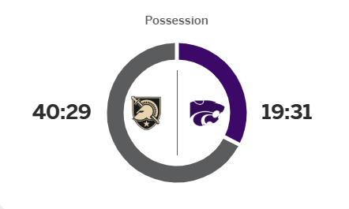
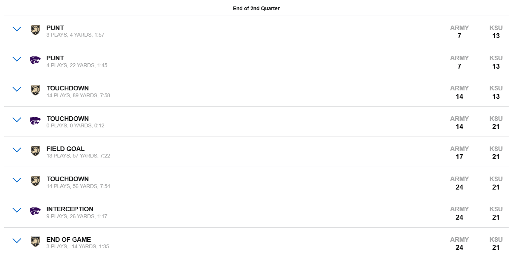
Understand the purpose of a probability density function for a continuous random variable
Remember this from previous classes?
\[ P(X=x) = \begin{cases} \dfrac{1}{6}, & x=1, \\[6pt] \dfrac{1}{6}, & x=2, \\[6pt] \dfrac{1}{6}, & x=3, \\[6pt] \dfrac{1}{6}, & x=4, \\[6pt] \dfrac{1}{6}, & x=5, \\[6pt] \dfrac{1}{6}, & x=6, \\[6pt] 0, & \text{otherwise}. \end{cases} \]
This is the probability mass function of a fair die.
What do we know about it?
- Probabilities are non-negative: \(P(X=x) \geq 0\).
- The total probability is 1:
\[ \sum_x P(X=x) = 1 \] - We can compute probabilities of events by adding up the masses.
- Example: \(P(X \leq 3) = \tfrac{1}{6} + \tfrac{1}{6} + \tfrac{1}{6} = \tfrac{1}{2}\).
So what about continuous random variables?
This probability distribution function isn’t all that different from the discrete version.
Here are the rules that all PDFs must follow:
- \(f(x) \geq 0\) for all \(x\).
- The total area under the curve is 1:
\[ \int_{-\infty}^{\infty} f(x)\,dx = 1 \] - Probabilities are found by areas, not points:
\[ P(a \leq X \leq b) = \int_a^b f(x)\,dx \] - For any single point,
\[ P(X=c) = 0 \]
Example of a PDF
Consider the function
\[ f(x) = \begin{cases} 2x, & 0 \leq x \leq 1, \\ 0, & \text{otherwise}. \end{cases} \]
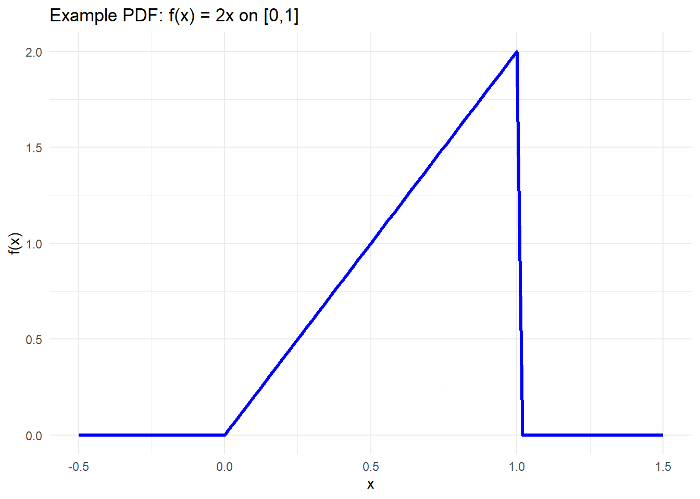
Check the properties:
Nonnegative?
\(f(x) = 2x \geq 0\) on \([0,1]\). ✅Total area?
\[ \int_{-\infty}^\infty f(x)\,dx = \int_0^1 2x\,dx = \left[x^2\right]_0^1 = 1 \] So it integrates to 1. ✅
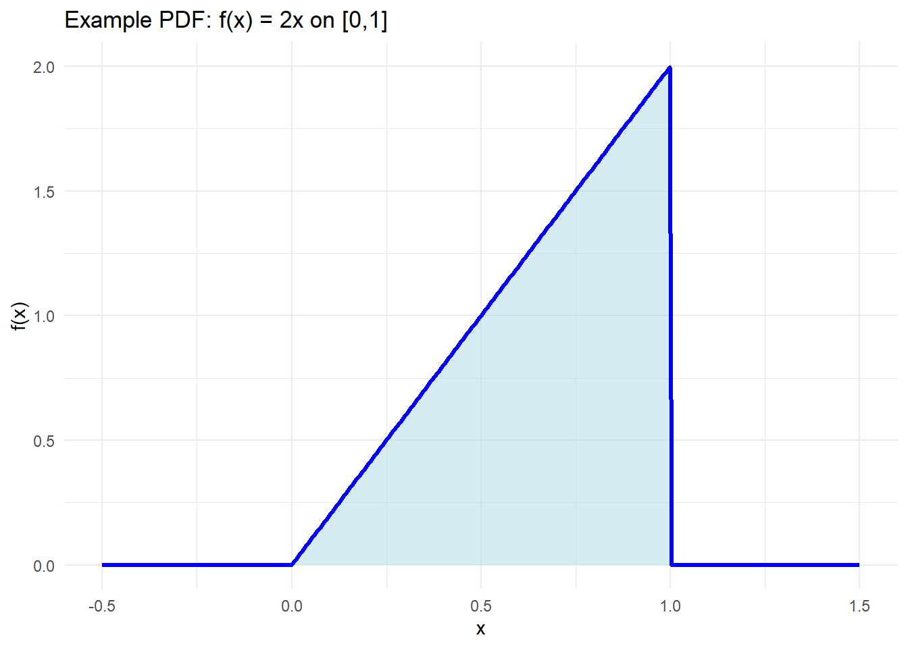
- Probability of an interval?
\[ P(0.2 \leq X \leq 0.5) = \int_{0.2}^{0.5} 2x \, dx = \left[x^2\right]_{0.2}^{0.5} = (0.25 - 0.04) = 0.21 \]
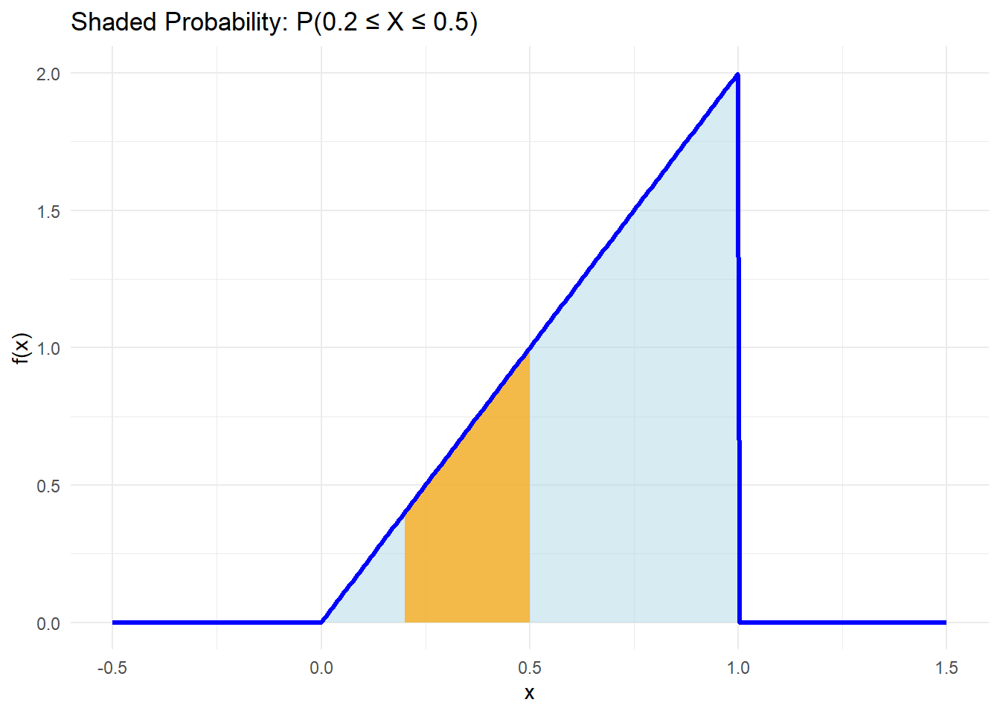
So this is a valid PDF! It’s a “triangle-shaped” distribution on \([0,1]\) that places more weight near 1 than near 0.
- Probability of a single point is zero: \(P(X=c)=0\).
For a continuous random variable with PDF \(f(x)\), probability comes from area, so any single point has zero width: \[ P(X=c) \;=\; \int_{c}^{c} f(x)\,dx \;=\; 0. \]
For example: \(P(X=.6)=0\)
\[ P(X=.6) \;=\; \int_{.6}^{.6} f(x)\,dx \;=\; 0. \]
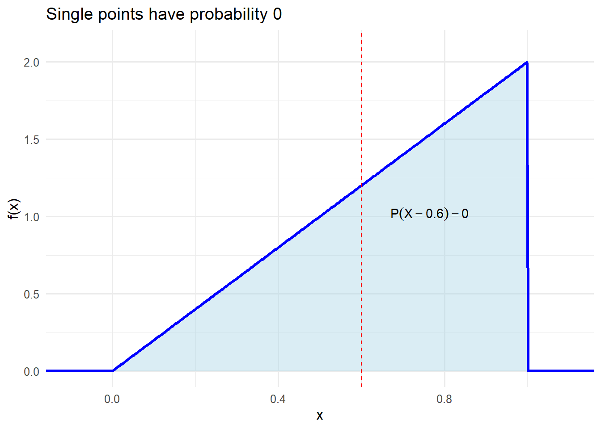
Understand the purpose of a cumulative density function for a continuous random variable
Remember this from previous classes?
\[ F(x) = \begin{cases} 0, & x < 1, \\[6pt] \dfrac{1}{6}, & 1 \leq x < 2, \\[6pt] \dfrac{2}{6}, & 2 \leq x < 3, \\[6pt] \dfrac{3}{6}, & 3 \leq x < 4, \\[6pt] \dfrac{4}{6}, & 4 \leq x < 5, \\[6pt] \dfrac{5}{6}, & 5 \leq x < 6, \\[6pt] 1, & x \geq 6. \end{cases} \]
This step function is the CDF of the discrete die. It accumulates probability as we move to the right.
What is a Cumulative Distribution Function (in general)?
For any random variable \(X\) (discrete or continuous), the cumulative distribution function is
\[
F(x) \;=\; P(X \le x).
\]
Things that are true of all CDFs:
- Nondecreasing: if \(a < b\) then \(F(a) \le F(b)\).
- Right-continuous: \(\lim_{x \downarrow c} F(x) = F(c)\).
- Event probabilities from \(F\): for any \(a < b\),
\[
P(a \le X \le b) \;=\; F(b) - F(a).
\]
Deriving a CDF from our PDF
Recall our PDF: \[ f(x) = \begin{cases} 2x, & 0 \le x \le 1,\\ 0, & \text{otherwise}. \end{cases} \]
Integrate to get \(F\):
\[ F(x) \;=\; \int_{0}^{x} 2t\,dt \;=\; x^{2}. \]
So for any \(x\) in \([0,1]\),
\[
F(x) = x^2.
\]
Quick checks:
- \(F\) is nondecreasing and continuous (no jumps).
- \(F(0)=0\), \(F(1)=1\).
- Example reads: \(F(0.5)=0.5^2=0.25\), \(F(0.7)=0.49\).
- Interval probability via CDF:
\[
P(0.2 \le X \le 0.5) = F(0.5) - F(0.2) = 0.25 - 0.04 = 0.21.
\]
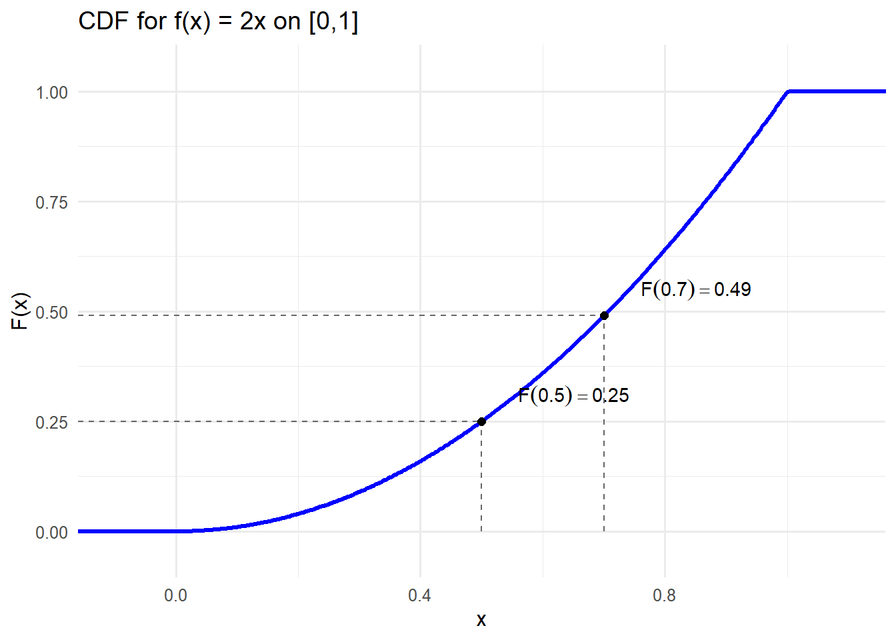
Reading probabilities from the CDF:
\(P(X \le 0.5) = F(0.5) = 0.25\)
\[ P(X \le 0.5) = \int_{0}^{0.5} 2t\,dt = 0.25 \]\(P(X > 0.7) = 1 - F(0.7) = 1 - 0.49 = 0.51\)
\[ P(X > 0.7) = \int_{0.7}^{1} 2t\,dt = 0.51 \]\(P(0.2 \le X \le 0.5) = F(0.5) - F(0.2) = 0.21\)
\[ P(0.2 \le X \le 0.5) = \int_{0.2}^{0.5} 2t\,dt = 0.21 \]
Calculate and interpret the expected value of a continuous random variable
Remember this from previous classes?
For a discrete random variable (like a fair die), the expected value is the weighted average of the possible outcomes:
\[ E[X] = \sum_x x \cdot P(X=x). \]
For the fair die: \[ E[X] = 1\cdot \tfrac{1}{6} + 2\cdot \tfrac{1}{6} + 3\cdot \tfrac{1}{6} + 4\cdot \tfrac{1}{6} + 5\cdot \tfrac{1}{6} + 6\cdot \tfrac{1}{6} = 3.5 \]
Continuous random variables
For a continuous random variable with PDF \(f(x)\), the expected value is defined by an integral:
\[ E[X] = \int_{-\infty}^{\infty} x \, f(x)\,dx. \]
This is the continuous version of the same weighted average idea — instead of summing over points, we integrate over the real line.
Example: our PDF
Recall our PDF:
\[
f(x) =
\begin{cases}
2x, & 0 \leq x \leq 1,\\
0, & \text{otherwise}.
\end{cases}
\]
Compute the expected value:
\[
E[X] = \int_{0}^{1} x \cdot (2x)\,dx = \int_{0}^{1} 2x^{2}\,dx.
\]
\[ E[X] = \left[\tfrac{2}{3}x^{3}\right]_{0}^{1} = \tfrac{2}{3}. \]
So the mean of this distribution is \(\tfrac{2}{3} \approx 0.667\).
Calculate and interpret the variance and standard deviation of a continuous random variable
Remember this from previous classes?
For a discrete random variable, variance measures how spread out the values are around the mean:
\[ \text{Var}(X) = \sum_x (x - \mu)^2 \, P(X=x), \]
where \(\mu = E[X]\).
The standard deviation is just the square root of the variance:
\[ \sigma = \sqrt{\text{Var}(X)}. \]
For a fair six-sided die:
We already know the mean is
\[ E[X] = \frac{1+2+3+4+5+6}{6} = 3.5. \]Compute the variance:
\[ \text{Var}(X) = \sum_{x=1}^{6} (x - 3.5)^2 \cdot \tfrac{1}{6}. \]
\[ = \frac{(1-3.5)^2 + (2-3.5)^2 + (3-3.5)^2 + (4-3.5)^2 + (5-3.5)^2 + (6-3.5)^2}{6} = \frac{35}{12} \approx 2.92. \]
- Then the standard deviation is
\[ \sigma = \sqrt{\tfrac{35}{12}} \approx 1.71. \]
So the die’s outcomes are typically about 1.7 away from the mean value of 3.5.
Continuous random variables
For a continuous random variable with PDF \(f(x)\), we replace the sum with an integral:
\[ \text{Var}(X) = \int_{-\infty}^{\infty} (x - \mu)^2 f(x)\,dx, \]
where \(\mu = E[X]\).
But this integral is often hard to compute directly, so there is a shortcut formula we can use:
\[ \text{Var}(X) = E[X^2] - \big(E[X]\big)^2, \]
where
\[ E[X^2] = \int_{-\infty}^{\infty} x^2 f(x)\,dx. \]
Example: our PDF
\[ f(x) = \begin{cases} 2x, & 0 \leq x \leq 1,\\ 0, & \text{otherwise}. \end{cases} \]
From before, the mean is \(\mu = E[X] = \tfrac{2}{3}\).
Compute \(E[X^2]\):
\[ E[X^2] = \int_{0}^{1} x^2 \cdot (2x)\,dx = \int_{0}^{1} 2x^3\,dx = \left[\tfrac{1}{2}x^4\right]_{0}^{1} = \tfrac{1}{2}. \]Now variance:
\[ \text{Var}(X) = \tfrac{1}{2} - \left(\tfrac{2}{3}\right)^2 = \tfrac{1}{2} - \tfrac{4}{9} = \tfrac{1}{18}. \]Standard deviation:
\[ \sigma = \sqrt{\tfrac{1}{18}} \approx 0.236. \]
Practice Problem
Consider the random variable \(X\) with PDF
\[ f(x) = \begin{cases} 2(1-x), & 0 \le x \le 1, \\ 0, & \text{otherwise}. \end{cases} \]
1. Plot the PDF
Answer
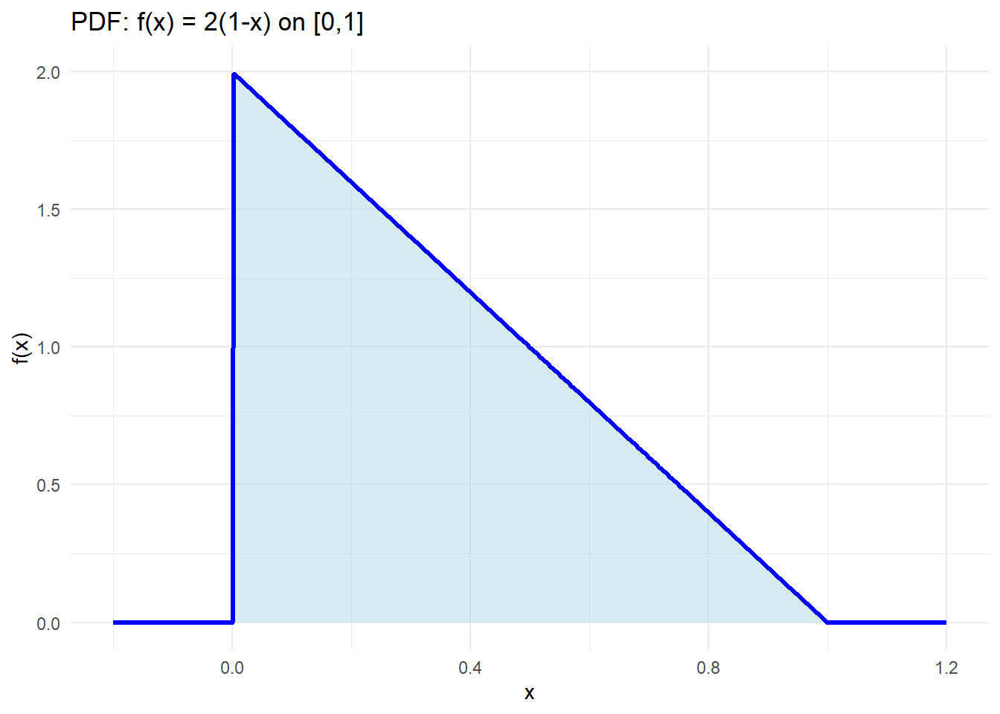
2. Find \(P(X = 0.4)\)
Answer
For continuous random variables:
\[ P(X=0.4) = \int_{0.4}^{0.4} f(x)\,dx = 0. \]
3. Find \(P(0.2 \le X \le 0.6)\)
Answer
\[ P(0.2 \le X \le 0.6) = \int_{0.2}^{0.6} 2(1-x)\,dx = \Big[2x - x^2\Big]_{0.2}^{0.6}. \]
At \(0.6\): \(2(0.6)-0.6^2=0.84\).
At \(0.2\): \(0.36\).
Difference: \(0.48\).
4. Find the CDF \(F(x)\)
Answer
For \(0 \le x \le 1\):
\[ F(x) = \int_{0}^{x} 2(1-t)\,dt = 2x - x^2. \]
So
\[ F(x) = \begin{cases} 0, & x < 0, \\ 2x - x^2, & 0 \le x \le 1, \\ 1, & x \ge 1. \end{cases} \]
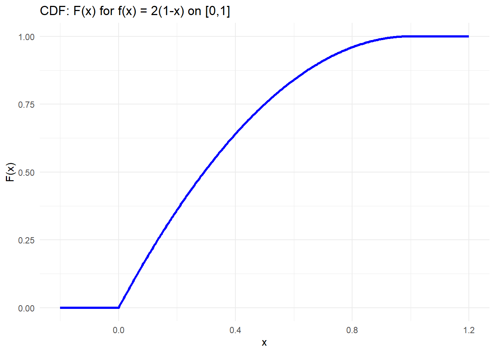
5. Find \(P(0.2 \le X \le 0.6)\) using the CDF
Answer
\[ P(0.2 \le X \le 0.6) = F(0.6) - F(0.2). \]
\(F(0.6)=0.84\), \(F(0.2)=0.36\), difference = \(0.48\).
✅ Same as before.
6. Find the expected value \(E[X]\)
Answer
\[ E[X] = \int_{0}^{1} x \cdot 2(1-x)\,dx = \int_{0}^{1} (2x - 2x^2)\,dx. \]
\[ = \Big[x^2 - \tfrac{2}{3}x^3\Big]_0^1 = \tfrac{1}{3}. \]
7. Find the variance \(\text{Var}(X)\)
Answer
Compute \(E[X^2]\):
\[ E[X^2] = \int_{0}^{1} x^2 \cdot 2(1-x)\,dx = \tfrac{1}{6}. \]
So
\[
\text{Var}(X) = E[X^2] - (E[X])^2
= \tfrac{1}{6} - \left(\tfrac{1}{3}\right)^2
= \tfrac{1}{18}.
\]
8. Find the standard deviation
Answer
\[ \sigma = \sqrt{\tfrac{1}{18}} \approx 0.236. \]
9. Find \(P(\mu - 2\sigma \le X \le \mu + 2\sigma)\)
Answer
\(\mu=\tfrac{1}{3}\), \(\sigma \approx 0.236\), so \(2\sigma \approx 0.472\).
Range: \([\tfrac{1}{3} - 0.472,\;\tfrac{1}{3} + 0.472] = [-0.139,\;0.805]\).
Since the support is \([0,1]\), we use \([0,0.805]\).
\[ P(0 \le X \le 0.805) = F(0.805) - F(0) = F(0.805). \]
\(F(0.805) = 2(0.805) - (0.805)^2 \approx 0.962\).
10. Find \(P(X < \mu - \sigma \;\text{ or }\; X > \mu + \sigma)\)
Answer
\(\mu=\tfrac{1}{3}\), \(\sigma \approx 0.236\).
Interval within 1 SD: \([0.097,\,0.569]\).
So the probability outside is
\[
P(X < 0.097) + P(X > 0.569).
\]
Using the CDF:
\[
P(X < 0.097) = F(0.097) \approx 0.185,
\] \[
P(X > 0.569) = 1 - F(0.569) \approx 1 - 0.814 = 0.186.
\]
Total = \(0.185 + 0.186 = 0.371\).
Board Problem
Consider the random variable \(X\) with PDF
\[ f(x) = \begin{cases} \dfrac{1}{4}, & 2 \le x \le 6,\\ 0, & \text{otherwise}. \end{cases} \]
- Plot the PDF
- Find \(P(X = 3)\)
- Find \(P(2.5 \le X \le 4.5)\)
- Find the CDF \(F(x)\)
- Find \(P(2.5 \le X \le 4.5)\) using the CDF. Is it the same as before?
- Find the expected value \(E[X]\)
- Find the variance \(\mathrm{Var}(X)\)
- Find the standard deviation
- Find \(P(\mu - 2\sigma \le X \le \mu + 2\sigma)\)
- Find \(P(X < \mu - \sigma \;\text{ or }\; X > \mu + \sigma)\)
Answers
1. Plot the PDF
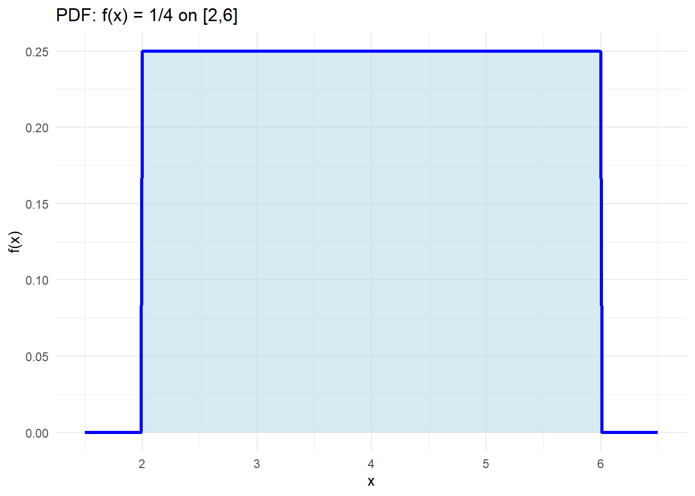
2. \(P(X=3)\)
For a continuous RV:
\[ P(X=3) = \int_{3}^{3} f(x)\,dx = 0. \]
3. \(P(2.5 \le X \le 4.5)\)
\[ P(2.5 \le X \le 4.5) = \int_{2.5}^{4.5} \tfrac{1}{4}\,dx = \tfrac{1}{4}\,(4.5-2.5) = \tfrac{1}{2}. \]
4. CDF \(F(x)\)
\[ F(x) = \begin{cases} 0, & x < 2,\\[4pt] \tfrac{x-2}{4}, & 2 \le x \le 6,\\[8pt] 1, & x \ge 6. \end{cases} \]
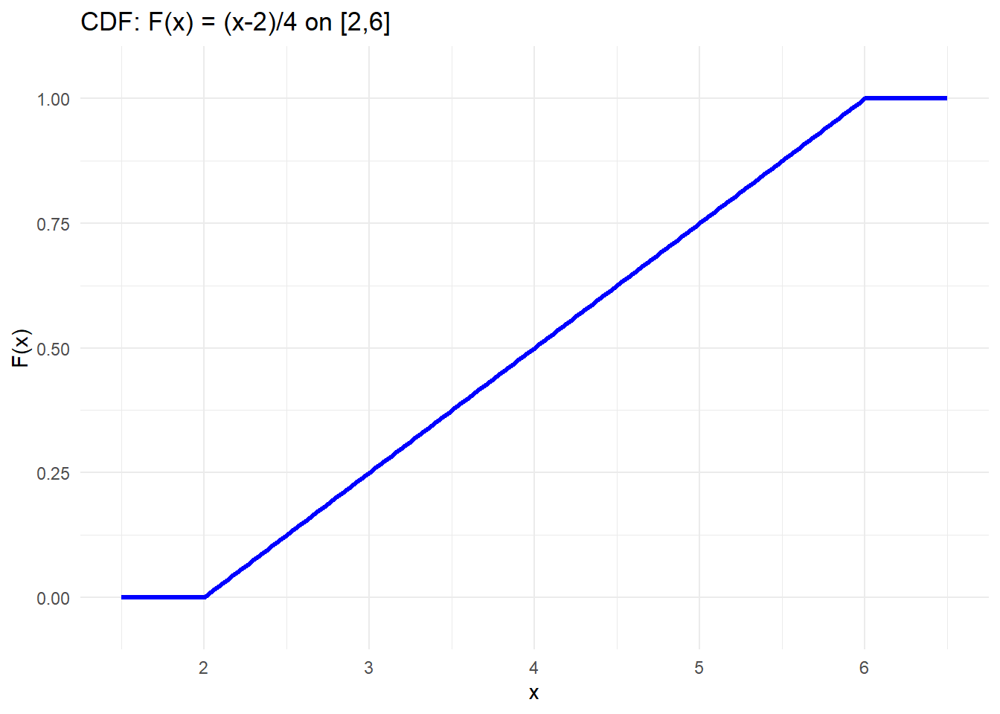
5. \(P(2.5 \le X \le 4.5)\) using \(F\)
\[ P(2.5 \le X \le 4.5) = F(4.5) - F(2.5). \]
\(F(4.5) = (4.5-2)/4 = 0.625\),
\(F(2.5) = (2.5-2)/4 = 0.125\).
Difference = \(0.5\). ✅ Same as before.
6. Expected value \(E[X]\)
\[ E[X] = \int_{2}^{6} x \cdot \tfrac{1}{4}\,dx = \tfrac{1}{4}\,\left[\tfrac{x^2}{2}\right]_{2}^{6} = \tfrac{1}{4}\,\Big(\tfrac{36}{2}-\tfrac{4}{2}\Big) = \tfrac{1}{4}\,(18-2) = 4. \]
7. Variance \(\mathrm{Var}(X)\)
First compute
\[ E[X^2] = \int_{2}^{6} x^2 \cdot \tfrac{1}{4}\,dx = \tfrac{1}{4}\,\left[\tfrac{x^3}{3}\right]_{2}^{6} = \tfrac{1}{4}\,\Big(\tfrac{216}{3}-\tfrac{8}{3}\Big) = \tfrac{1}{4}\cdot \tfrac{208}{3} = \tfrac{52}{3}. \]
So
\[ \mathrm{Var}(X) = E[X^2] - (E[X])^2 = \tfrac{52}{3} - 4^2 = \tfrac{52}{3} - 16 = \tfrac{4}{3}. \]
8. Standard deviation
\[ \sigma = \sqrt{\tfrac{4}{3}} = \tfrac{2}{\sqrt{3}} \approx 1.155. \]
9. Probability within \(2\sigma\) of the mean
Here \(\mu=4\), \(2\sigma \approx 2.309\).
Interval \([4-2.309,\,4+2.309] = [1.691,\,6.309]\).
Intersect with support \([2,6]\) gives \([2,6]\).
So
\[ P(\mu-2\sigma \le X \le \mu+2\sigma) = 1. \]
10. Probability more than \(1\sigma\) from the mean
Interval within \(1\sigma\):
\[ [\mu-\sigma,\;\mu+\sigma] = [4-1.155,\,4+1.155] = [2.845,\,5.155]. \]
Length of this interval = \(2.31\).
Since the PDF is flat on \([2,6]\) (length 4):
\[ P(|X-\mu|\le\sigma) = \tfrac{2.31}{4} \approx 0.577. \]
Therefore
\[ P(|X-\mu| > \sigma) = 1 - 0.577 = 0.423. \]
Before you leave
Today:
- Any questions for me?
Lesson 9
Upcoming Graded Events
- WPR 1: Lesson 10
- Project Milestone 3: Due Canvas Lesson 7